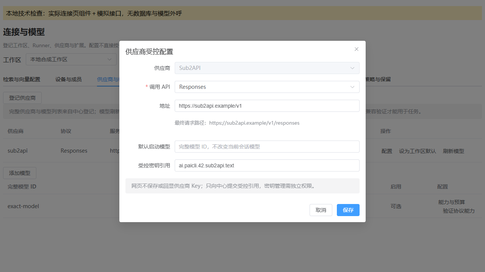
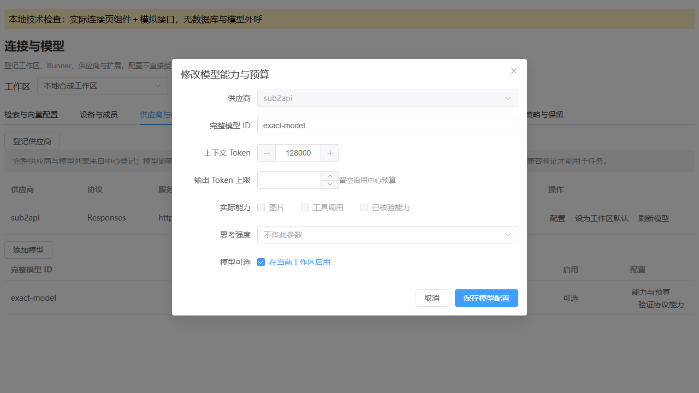
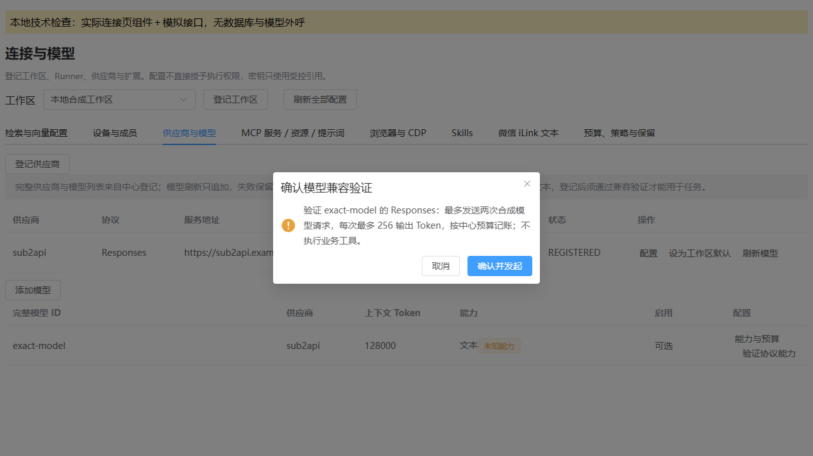

PaiCLI Sub2API 本地实现检查
2026-10-04 · 对应项目实现设计 v1.1 · 执行者 Codex
本次完成 PaiCLI 文本模型扩展的本地编码与技术检查。真实 Sub2API 实例兼容、原业务验收及运行包切换尚未执行。图片编辑的 DashScope 链路与其他项目保持原配置。
已实现的行为
- Sub2API 供应商显式选择 Responses 或 Chat Completions，使用精确模型 ID。
- 完整工具回灌、Responses 加密协议项保留、严格终态与用量、取消阻塞连接，不自动重放或改用其他供应商。
- 中心沿用若依权限、工作区托管密钥、许可和预算；兼容验证绑定定义、协议、模型和密钥版本，版本变化后重新验证。
- 管理端新增协议配置及验证入口，确认费用后才提交控制任务。
实际技术检查
| 检查范围 | 测试项 | 结果 |
|---|---|---|
| 文本协议与工具回合 | 57 | 通过，失败/错误/跳过均为 0 |
| 受控 Runner 与租约 | 25 | 通过，失败/错误/跳过均为 0 |
| CLI 模型显示与选择 | 13 | 通过，失败/错误/跳过均为 0 |
| 中心权限、版本与证据 | 93 | 通过，失败/错误/跳过均为 0 |
| 管理端表单、权限及请求 | 11 | 通过；PaiCLI vue-tsc 同时通过 |
总计 199 项，重跑不重复计数。Core/Runner/CLI、Center API 和前端独立构建成功；四模块快照源码差异 0，jar 自有 class 逐字节差异 0，前端最终目录 798 个文件。契约检查对应 97 个操作者操作、78 条路径和 30 个 Runner 操作。
实际组件浏览器检查
使用真实连接页组件及 Element Plus，本地内存接口和空子功能组件。截图已逐张回读。取消时模拟 verify 请求为 0；确认请求包含供应商 If-Match 与 modelVersion。它们不代表真实服务或业务数据验证。



交付与限制
制品位于工作区 .runtime/paicli/sub2api-20261004，当前运行包没有替换。独立安全/契约复核尚未执行，不宣称上线就绪或用户接受。真实启用需核实实例 HTTPS 地址、协议、模型、工作区托管用途、费用预算以及运行版本切换范围。
完整检查记录与原失败证据 · 制品位置与哈希 · 项目实现文档 · 唯一开发记录